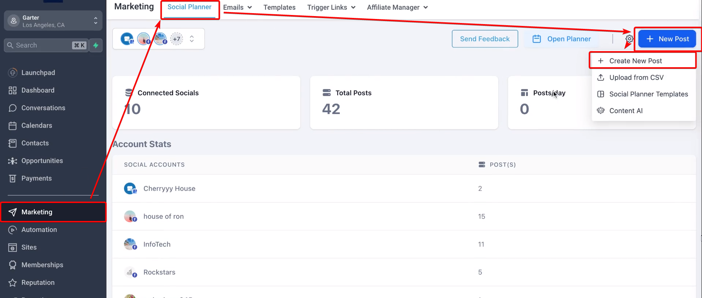
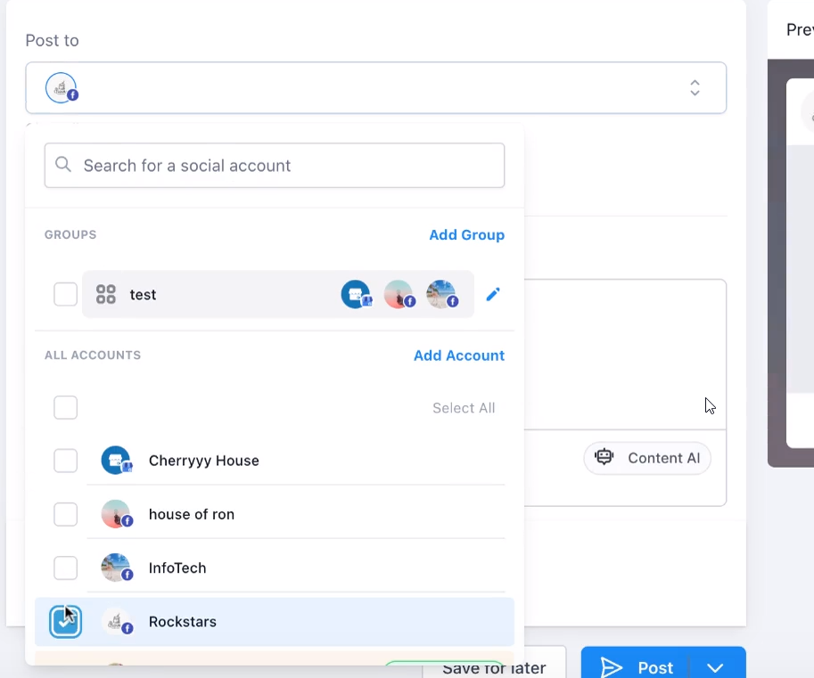
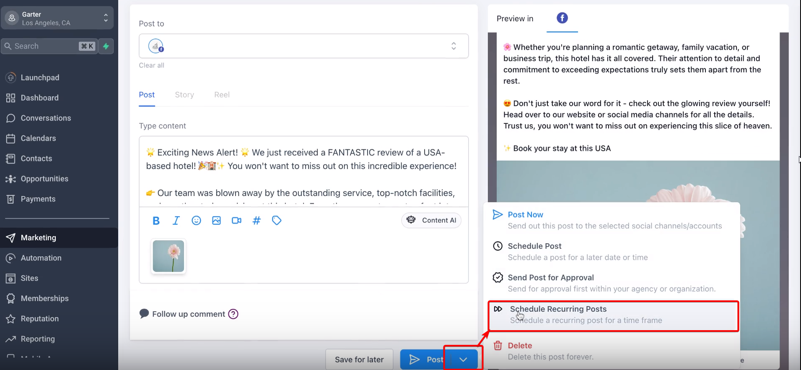
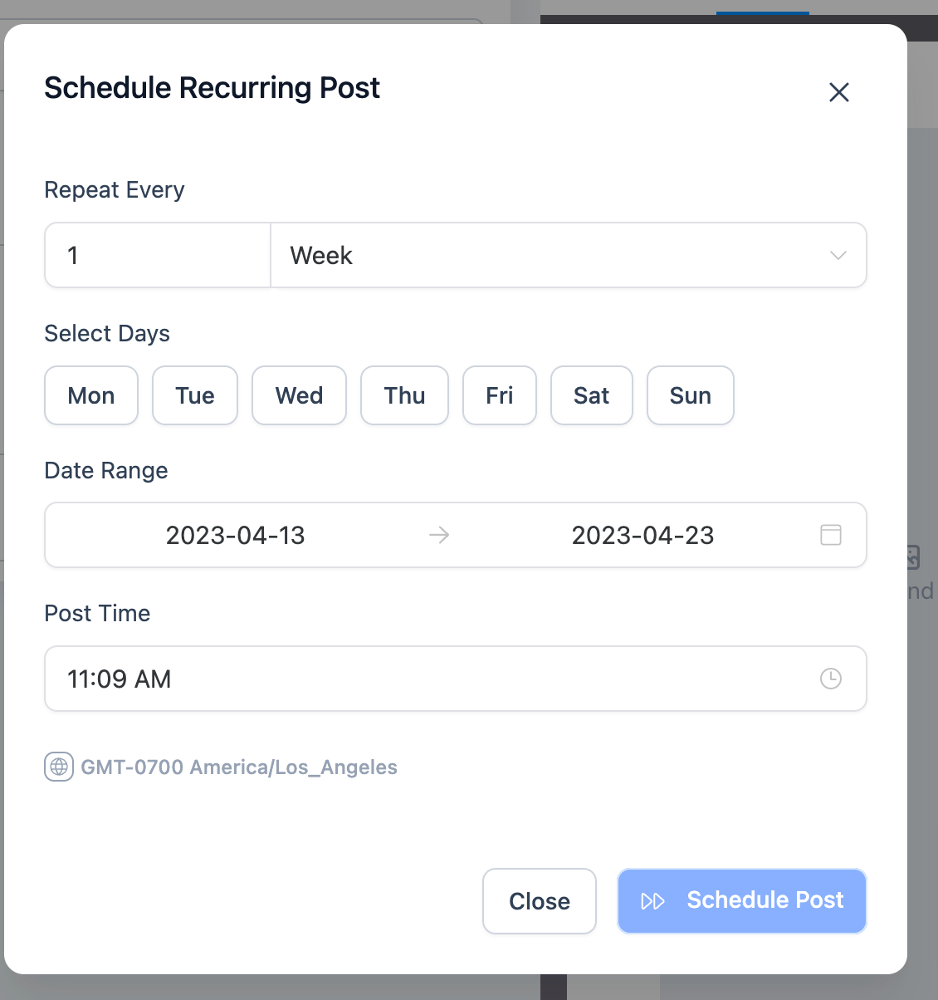
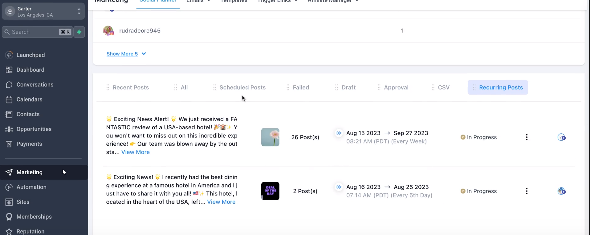

Recurring posts provide a streamlined way to create evergreen content across various social platforms, scheduled daily, weekly, monthly, or yearly. Through a simple process, users can generate quality content using AI, schedule it with flexible time settings, and even edit parent and child posts. Take control of your content strategy by utilizing this feature, but be mindful of platforms like Twitter, which may flag repetitive content.
Covered in this Article
What is this feature?
How to use this feature?
FAQs
Q: Can I set recurring posts for specific holidays or annual events?
Q: What happens if I edit the parent post of a recurring schedule?
Q: Can I mix media types, like images and videos, in my recurring posts?
Q: How does the recurring post feature interact with different time zones?
Q: Is there a limit to how far in advance I can schedule recurring posts?
Q: Will Twitter's repetitive content policy affect my recurring posts?
Q: Can I pause or temporarily stop a recurring post series?
Q: What if I want different recurring posts for different social platforms?
Q: Can recurring posts be part of a larger campaign with non-recurring content?
Q: How can I ensure my recurring posts are accessible to all users, including those with disabilities?
Q: How do I avoid making recurring posts feel too automated or impersonal?
What is this feature?
The recurring posts feature in the Social Planner is designed to help users maintain consistent and automated social media engagement by scheduling evergreen content regularly. Here's a detailed breakdown of how it works:
Flexible Scheduling: Users can set the posts to repeat every day, week, month, or year. They can select specific days of the week, date ranges, and post times according to their preferences.
Content Creation: Users can generate quality content using AI, allowing them to create posts that resonate with their audience quickly.
Editing Options: The feature allows for edits to both parent and child posts. If changes are made to the parent post, they will be replicated in all child (scheduled) posts. Editing a child's post will not impact the parent's post.
Recurring Posts Tab: The parent post is added to the Recurring Posts tab once scheduled. Users can access the edit function to change all recurring posts' time and date ranges.
Scheduled Posts: Individual scheduled posts appear separately, and users can edit each as needed without affecting the others.
Platform Consideration: It's important to be mindful of the policies of specific social platforms. For example, Twitter may flag content as repetitive if the recurring post feature is used excessively.
Long-term Strategy: This feature allows for creating long-term content strategies, helping businesses stay in front of their audience without manually posting content regularly.
Images and Media: Along with the text, users can add images or other media from their library or, through image AI, visually enrich the content.
Monitoring and Management: Users can track and manage all their recurring posts through a simple interface, providing control over their social media content.
The recurring posts feature empowers users to take a proactive and automated approach to social media management, ensuring a steady stream of fresh content without constant manual effort. It offers great flexibility and control, making it a powerful tool in a modern marketer's toolkit.
Usage Cases
Promoting Seasonal Offers: A retail store can set recurring posts to promote seasonal sales, offers, or specific products at the beginning of each season. They can easily plan this for the entire year and forget the manual posting process.
Daily Inspirational Quotes: A motivational speaker or life coach can schedule daily inspirational quotes to engage their audience and reinforce their brand messaging. This consistency helps in keeping the audience connected and engaged.
Weekly Tips or Tutorials: A tech company or educational platform can set up weekly tutorials or tips to share with their followers. This regular content provides value and helps establish the company as an expert.
Celebrating Recurring Events: A company can acknowledge and celebrate recurring events like employee birthdays, anniversaries, or national holidays, ensuring that these posts are never missed and adding a personal touch to the company's social media presence.
Monthly Product Showcases: A manufacturer or distributor can showcase different products every month, providing information, features, and benefits to educate potential customers.
Content Repurposing: For businesses with a rich content library (such as blogs or podcasts), recurring posts can periodically share or reshare this content to new followers or those who might have missed it the first time.
Reinforcing Brand Campaigns: If a company has a year-long brand campaign or slogan, recurring posts can consistently remind followers of the brand's core message, ensuring that it stays fresh in their minds.
Reminder for Regular Events: For organizations hosting regular events like webinars or community meet-ups, recurring posts can act as reminders, ensuring participants have the information they need to join.
Automating Social Engagement in Different Time Zones: For global businesses, recurring posts can schedule content at optimal times for different time zones, ensuring the content reaches the broadest possible audience.
Compliance and Regular Announcements: In industries where regular compliance updates or announcements are necessary, recurring posts can ensure that the necessary information is shared with stakeholders at the required intervals.
Celebrating Historical Milestones: Museums, historical societies, or educational institutions can use this feature to share historical facts or milestones on the corresponding dates, providing educational content to their followers.
How to use this feature?
How to create a Recurring Post?
- Go to Marketing > Social Planner.
- Create a new post for social platform on which you would like to create content.


Please Note:
On Twitter, this content may be flagged as repetitive when compared to other social media platforms.
Create New Post with Recurring Schedule

Day - The user will have to choose the date and time of posting on repeat everyday.
Week - Users will have to choose the day of the week when they would like to repeat schedule between the date range and post time.

Month - The user will have to choose the date and time of posting on repeat once in a month.

Year -The user will have to choose the date and time of posting on repeat once in the year.

Once the recurring post is scheduled, the parent post will be added in the Recurring Posts tab with the edit function to change the time and date range. For example, if four posts are scheduled using a recurring post, the parent post will show in recurring post and one post will appear in the scheduled post.

If you change the content on the parent post, it will replicate in the child's scheduled post. If you change child-scheduled post content, it will not impact the parent post.
Important things to note:
Avoid Repetitiveness: Though recurring posts can save time, please ensure content isn't overly repetitive, especially on platforms like Twitter that might flag it as spam. Variation and customization can make each post feel fresh.
Review Regularly: Please review and update recurring posts regularly to ensure relevance, especially if there have been changes to products, offers, or brand messaging.
Consider Audience Engagement: Please note that interaction from followers might differ across various posts. Monitoring and responding to these interactions can provide insight and maintain engagement.
Compliance with Platform Policies: Different social media platforms have different policies regarding recurring and automated posts. Please be aware of and comply with each platform's guidelines to avoid potential issues.
Utilize Rich Media: Images, videos, or GIFs can make recurring posts more engaging. Please consider integrating rich media into the content to grab attention.
Time Zone Considerations: If targeting a global audience, please consider scheduling posts according to the different time zones of your target demographics to maximize reach.
Content Backup: Please ensure a backup of all recurring content. Any technical issues could lead to loss of content, and having a backup will prevent unnecessary work in recreating it.
Monitoring Performance: Please note that analyzing the performance of recurring posts helps understand what resonates with the audience. Regularly monitoring insights can guide future content strategy.
Avoiding Over-Scheduling: While it's tempting to schedule a lot of content in advance, please avoid over-scheduling, as it may lead to a lack of spontaneity and real-time engagement with your audience.
Sensitive Issues and Crisis Management: Please be cautious with recurring posts during sensitive times or crises. Scheduled posts that may be inappropriate during unexpected events must be reviewed and managed accordingly.
Integration with Other Campaigns: If ongoing or planned marketing campaigns exist, please ensure that the recurring posts align with the overall marketing and branding strategies.
Accessibility Considerations: Please include accessible content, such as video captions or alternative text for images, to ensure that all followers, including those with disabilities, can engage with the posts.
Legal and Ethical Considerations: Please be mindful of intellectual property rights, permissions, and other legal considerations when using images, quotes, or other content within recurring posts.
Experiment and Iterate: Recurring posts are a tool, and like any tool, they require experimentation to find the most effective way to use them. Please don't be afraid to try different strategies and iterate based on what you learn.
FAQs
Q: Can I set recurring posts for specific holidays or annual events?
A: Yes, you can schedule recurring posts for specific dates, allowing you to automate posts for holidays or annual events like company anniversaries.
Q: What happens if I edit the parent post of a recurring schedule?
A: Editing the parent post will replicate the changes in child scheduled posts. However, changes made to individual child posts will not affect the parent post.
Q: Can I mix media types, like images and videos, in my recurring posts?
A: Yes, you can include various media types, such as images, videos, or GIFs, within the recurring posts to make them more engaging.
Q: How does the recurring post feature interact with different time zones?
A: You'll need to set the time for your recurring posts considering the time zone of your target audience. Be mindful of global audiences if applicable.
Q: Is there a limit to how far in advance I can schedule recurring posts?
A: Depending on the specific settings and platform guidelines, you may be able to schedule recurring posts for days, weeks, months, or even years in advance.
Q: Will Twitter's repetitive content policy affect my recurring posts?
A: Yes, Twitter might flag recurring posts as repetitive content. It's essential to be mindful of this and create variations in content to comply with Twitter's policies. Click here for more details.
Q: Can I pause or temporarily stop a recurring post series?
A: You cannot pause or temporarily stop a recurring post series
Q: What if I want different recurring posts for different social platforms?
A: You can create unique recurring posts tailored to each social platform using the Customize Each Post functionality, allowing you to align the content with each network's specific character limits and guidelines.
Q: Can recurring posts be part of a larger campaign with non-recurring content?
A: Absolutely! You can integrate recurring posts with other marketing strategies and campaigns to create a cohesive and consistent brand message.
Q: How can I ensure my recurring posts are accessible to all users, including those with disabilities?
A: Incorporating accessibility features like captions, alt text, and other inclusive practices can make your recurring posts accessible to a broader audience.
Q: How do I avoid making recurring posts feel too automated or impersonal?
A: Mixing recurring posts with real-time, personalized content and engaging with your audience can help maintain a human touch in your social media presence.